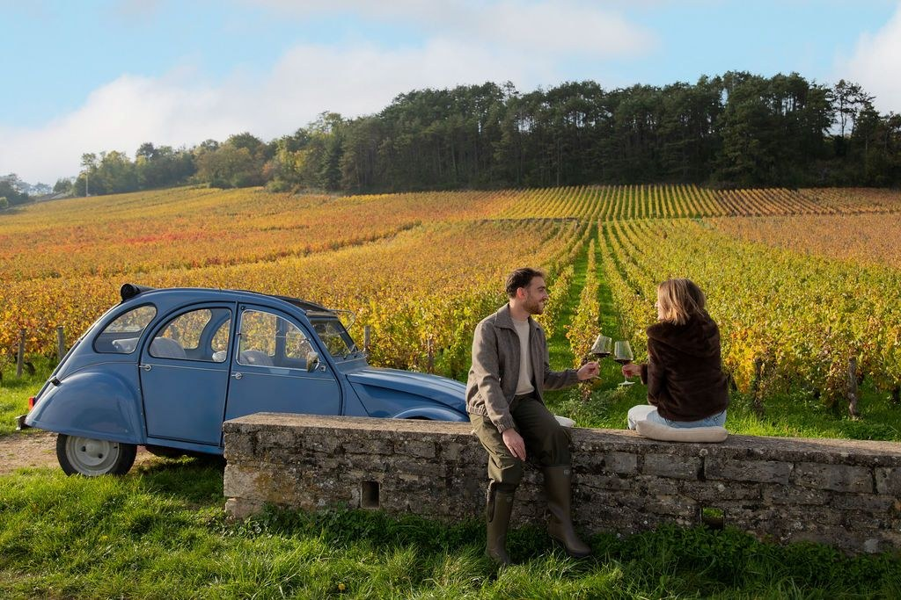
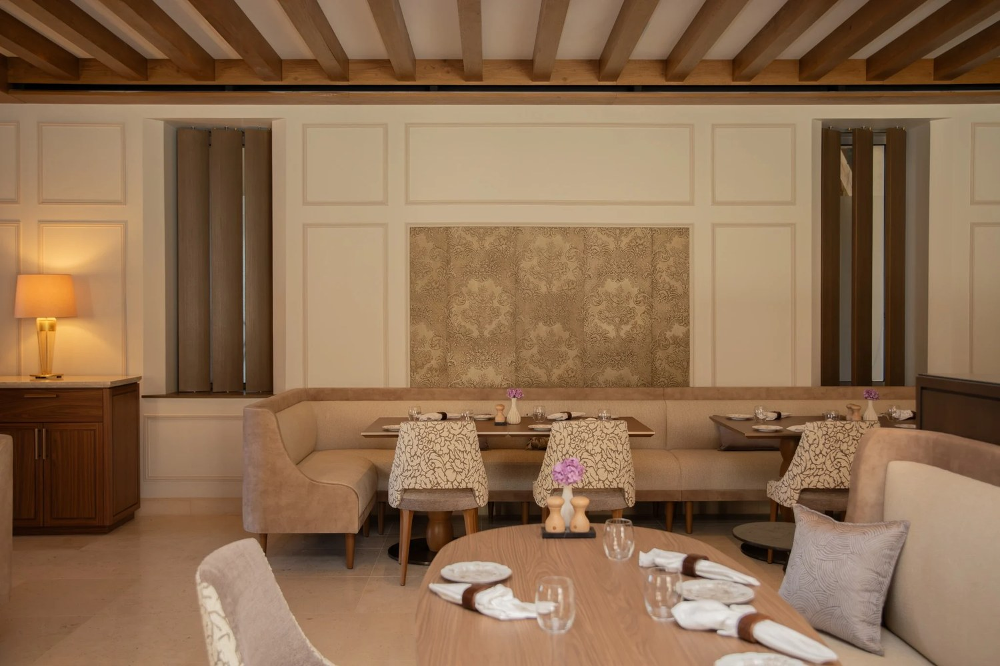
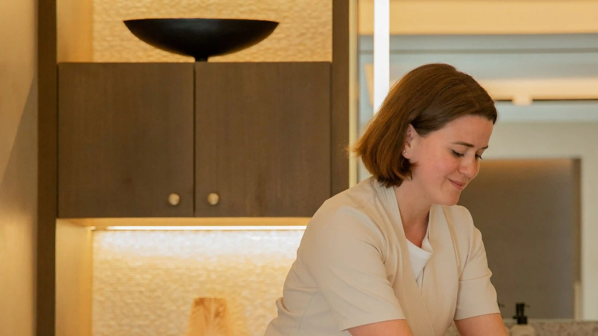

Château la Commaraine, à Pommard : un 5 étoiles qui dort dans ses propres vignes
Un château du XIIe siècle rouvert au printemps 2026, posé au milieu d'un monopole de 3,63 hectares en Pommard Premier Cru. La rareté n'est pas le luxe, elle est le foncier.

Le château vu depuis le Clos. Les vignes ne bordent pas la propriété : elles la touchent. Photo : site officiel de l'établissement.
L'essentielCe qui distingue vraiment cette maison
- Le monopole. 3,63 hectares en Pommard Premier Cru, certifiés en biodynamie en 2025 après sept ans de conversion. L'hôtel ne voisine pas un vignoble, il en possède un, entier, et personne d'autre n'y a de rang.
- La Suite Cuverie. 64 m² au-dessus du lieu de vinification. C'est la seule chambre de ce palmarès dont l'intérêt tienne à ce qui se passe sous le plancher.
- Deux tables, pas une. Le Clos, restaurant et bar, et Le VIII, la table gastronomique installée dans la cave voûtée. Direction confiée à Christophe Raoux, Meilleur Ouvrier de France.
Avis documentaire, sans séjour de contrôle. Nous n'avons pas dormi ici, et nous le disons plutôt que de le laisser croire. L'architecture, les catégories, les tables et le vignoble se vérifient sur pièces ; le service, non. Informations relevées le 25 août 2026 sur le site officiel de l'établissement.
Il existe en France quantité d'hôtels qui se disent « au cœur du vignoble » et qui, à l'arrivée, en sont séparés par une départementale. Le Château la Commaraine appartient à l'autre catégorie, beaucoup plus étroite : celle des maisons dont la vue depuis la chambre donne sur des rangs qui leur appartiennent. Nous l'évaluons 9,0/10 au Score LMHS, avec un Indice Bourgogne de 4,6/5, notre indice thématique pour cette page.
Un fief des ducs de Bourgogne, resté debout depuis 1112
Le château remonte au XIIe siècle. Il fut d'abord un fief des ducs de Bourgogne, passa ensuite entre les mains de familles nobles, fut confisqué à la Révolution et traversa les deux guerres. En 1787, Thomas Jefferson, alors ambassadeur des États-Unis en France, s'arrête en Bourgogne, juge ces vins d'excellente qualité et en commande 124 bouteilles. L'anecdote est jolie, mais elle dit surtout que la parcelle avait déjà une réputation il y a deux cent quarante ans.
La réhabilitation a demandé cinq années. Elle a été confiée à l'architecte Richard Martinet, à qui l'on doit les chantiers de l'Hôtel de Crillon et du Peninsula Paris, et menée sous le contrôle des Bâtiments de France avec des artisans locaux. Le parti pris se résume simplement : ne pas se faire remarquer. Pierre blonde de Bourgogne, voûtes conservées, boiseries claires, et le confort contemporain glissé dans les interstices plutôt que posé par-dessus. Le résultat s'intègre au village sans le dominer. L'établissement compte 37 chambres et suites, auxquelles s'ajoute une villa, et appartient à la collection des Leading Hotels of the World.
Les chambres : trois catégories qui ne racontent pas la même chose
Les chambres ont été dessinées dans un esprit clair et classique. La plupart donnent sur les vignes ou sur la cour. Les attentions relevées sont cohérentes avec le propos de la maison : bottes et imperméables mis à disposition pour marcher dans le Clos par tous les temps, produits de bain Diptyque, et une sélection de vins en chambre choisie en fonction des parcelles visibles depuis la fenêtre. Ce dernier détail est le genre de chose qu'on ne fait pas par hasard.
La Suite Rotonde occupe la tour médiévale du XIVe siècle. Plan circulaire, vue sur le village de Pommard et sur le vignoble. C'est la catégorie à demander pour l'architecture. La Suite Cuverie, 64 m², surplombe directement le lieu de vinification : à la vendange, on entend et on sent le travail se faire en dessous. C'est la plus singulière des trois, et la seule dont l'intérêt soit saisonnier. La Villa des Vignes, 211 m², aligne quatre chambres, un salon et une cuisine, pour une privatisation complète.

L'escapade en 2CV, l'une des activités proposées dans le Clos. Photo : site officiel de l'établissement.
Le Clos de la Commaraine, un monopole certifié en biodynamie
C'est le cœur du sujet. Le Clos de la Commaraine est un monopole de 3,63 hectares en appellation Pommard Premier Cru. Un monopole, en Bourgogne, signifie qu'une seule maison détient la totalité du climat, ce qui est rare dans une région où le morcellement des parcelles est la règle depuis le Code civil. La conversion en biodynamie a demandé sept ans et la certification est tombée en 2025.
Les activités proposées découlent de cette possession plutôt que d'un catalogue d'animations : balade à cheval dans le Clos, escapade en 2CV à travers les parcelles, atelier de création de son propre fût, visites et dégustations privées. La Suite Cuverie ouvre un accès privilégié à ces dernières.
Deux tables sous la direction d'un Meilleur Ouvrier de France
La restauration est dirigée par Christophe Raoux, Meilleur Ouvrier de France, également chef exécutif du Royal Champagne, en tandem avec le chef résident Jérôme Rioux. La maison exploite deux adresses distinctes, ce que les présentations rapides oublient souvent. Le Clos est le restaurant et le bar, ouvert sur la cuverie, dans un registre bourguignon contemporain, une cinquantaine de couverts. Le VIII est la table gastronomique, installée dans la cave voûtée du château.
Les plats relevés à la carte disent assez bien l'intention : jambon persillé de tradition bourguignonne, volaille de Bresse au vinaigre de Bourgogne, gambas française au miso, truite confite au yuzu. Le classique régional tient la colonne vertébrale, les échappées asiatiques restent des échappées. La carte des vins est signée du sommelier Victor Petiot : les grands noms bourguignons y figurent, Bouchard, Vogüé, Prieuré Roch, mais la Savoie, la Loire et la Nouvelle-Zélande y ont aussi leur place. Près de la moitié de la sélection est en biodynamie, et l'entrée de gamme commence à 45 euros la bouteille, ce qui, dans une maison de ce rang, mérite d'être noté.

La salle du Clos, poutres apparentes et boiseries claires. Photo : site officiel de l'établissement.
Un spa myBlend, et une piscine chauffée face aux rangs
L'espace bien-être a été développé en partenariat avec myBlend, la marque du groupe Clarins. Il réunit une piscine extérieure chauffée, trois cabines de soin dont une double, un jacuzzi, un sauna, un hammam et un bain froid. Les soins capillaires sont confiés à Flora Lab Paris. Les tables de massage intègrent un système RedPulse à infrarouge lointain et une diffusion sonore immersive à 360 degrés, ce qui relève davantage de l'équipement que du gadget dans une maison qui joue la carte du bien-être.

Une des trois cabines de soin. Photo : site officiel de l'établissement.
L'engagement environnemental, chiffré plutôt que proclamé
Trois engagements sont affichés, et ils ont le mérite d'être vérifiables. Zéro plastique à usage unique dans l'établissement. Un bassin de récupération des eaux de pluie de 500 m³, qui alimente le refroidissement et l'irrigation. Une électricité d'origine renouvelable. À quoi s'ajoute la certification biodynamique du vignoble, qui n'est pas une déclaration mais un label contrôlé. Nous notons ces éléments tels que la maison les publie, sans les avoir audités.
Château la Commaraine en bref
| Adresse | 24 Grande Rue, 21630 Pommard, Côte-d'Or |
| Téléphone | +33 3 75 83 43 34 |
| Catégorie | 5 étoiles, Leading Hotels of the World |
| Ouverture | Printemps 2026, après cinq années de restauration |
| Capacité | 37 chambres et suites, plus une villa de 211 m² |
| Vignoble | Monopole de 3,63 ha, Pommard Premier Cru, biodynamie certifiée 2025 |
| Tables | Le Clos (restaurant et bar) et Le VIII (gastronomique, cave voûtée) |
| Direction des cuisines | Christophe Raoux, MOF, avec Jérôme Rioux |
| Spa | myBlend : piscine extérieure chauffée, 3 cabines, jacuzzi, sauna, hammam, bain froid |
| Tarifs | À partir de 450 € la nuit |
| Accès | Beaune 10 min, Dijon 45 min, TGV Paris-Dijon 1 h 35 |
| Score LMHS | 9,0/10 · Indice Bourgogne 4,6/5 |
Informations relevées le 25 août 2026 sur le site officiel de l'établissement.
Autour de Pommard : ce qu'il y a à faire
Pommard est à dix minutes de Beaune et à quarante-cinq minutes de Dijon. Depuis Paris, comptez 1 h 35 de TGV jusqu'à Dijon, puis la route. Les climats du vignoble de Bourgogne sont inscrits au patrimoine mondial de l'Unesco depuis 2015, ce qui donne au paysage un statut que peu de vignobles possèdent.
Beaune se visite à pied en une demi-journée : les Hospices et leurs toits vernissés, dont la vente aux enchères de novembre reste un rendez-vous mondial, les remparts et la collégiale Notre-Dame. Le marché du samedi matin vaut le détour. Pour les vins, la Côte de Nuits est à une trentaine de minutes, avec Gevrey-Chambertin et Nuits-Saint-Georges, et Meursault, côté blancs, est tout proche. Les cyclistes emprunteront la Voie des Vignes, qui relie Beaune à Santenay à travers les appellations.
Pour qui, et à quelles réserves
Pour qui. Pour les amateurs de vin qui veulent comprendre plutôt que consommer, la Suite Cuverie et l'atelier de fût n'ayant pas d'équivalent évident ailleurs. Pour les couples cherchant une maison de petite taille avec un spa complet. Pour un séjour de vendanges, en septembre et octobre, où la maison est à son sujet.
Nos réserves. D'abord le prix : 450 euros d'entrée de gamme, avant les tables et le spa, placent le séjour hors de portée d'une visite improvisée. Ensuite l'atmosphère, orientée vers une clientèle adulte, ce qui n'en fait pas une adresse familiale, sauf avec de grands enfants déjà curieux de vin. Enfin, et c'est la réserve la plus honnête, la maison vient d'ouvrir. Un hôtel de cette ambition met une saison ou deux à trouver son rythme de service, et nous n'avons pas dormi sur place pour en juger.
FAQ : Château la Commaraine
Quel est le prix d'une nuit au Château la Commaraine ?
Les tarifs démarrent à partir de 450 euros la nuit, relevé effectué le 25 août 2026. Les suites signature et la Villa des Vignes, 211 m² et quatre chambres, se situent au-delà. Les tarifs d'un hôtel de cette catégorie varient fortement selon la saison : la période des vendanges et celle de la vente des Hospices de Beaune, en novembre, sont les plus tendues de l'année en Côte d'Or.
Qu'est-ce que le Clos de la Commaraine ?
C'est le vignoble privé de l'hôtel : un monopole de 3,63 hectares en appellation Pommard Premier Cru, cultivé en biodynamie et certifié en 2025 après sept ans de conversion. Un monopole signifie qu'une seule maison détient l'intégralité du climat, ce qui est peu fréquent en Bourgogne, où les parcelles sont morcelées entre de nombreux propriétaires. Les hôtes y accèdent par des balades à cheval, des escapades en 2CV, des ateliers de création de fût et des dégustations privées.
Combien de restaurants compte le Château la Commaraine ?
Deux. Le Clos est le restaurant et le bar, ouvert sur la cuverie, dans un registre bourguignon contemporain, une cinquantaine de couverts. Le VIII est la table gastronomique, installée dans la cave voûtée du château. Les deux sont placés sous la direction de Christophe Raoux, Meilleur Ouvrier de France, avec le chef résident Jérôme Rioux.
Quelle suite choisir pour une première visite ?
La Suite Cuverie, 64 m², si vous venez pour le vin : elle surplombe le lieu de vinification et ouvre un accès privilégié aux dégustations. La Suite Rotonde, logée dans la tour médiévale du XIVe siècle, si vous venez pour l'architecture et la vue sur le village. La première est plus intéressante en saison de vendanges, la seconde toute l'année.
Le spa est-il ouvert aux personnes qui ne séjournent pas à l'hôtel ?
Nous n'avons pas trouvé de réponse claire sur ce point dans les informations publiées par l'établissement, et nous préférons le dire plutôt que de le supposer. Le spa a été développé avec myBlend et réunit une piscine extérieure chauffée, trois cabines dont une double, jacuzzi, sauna, hammam et bain froid. Pour une réservation extérieure, le plus sûr reste d'appeler la maison au +33 3 75 83 43 34.
Quelle est la meilleure période pour venir ?
Septembre et octobre, pendant les vendanges, si le vin est le motif du séjour : c'est le seul moment où la Suite Cuverie tient toute sa promesse. L'été pour la piscine extérieure chauffée et les terrasses. L'hiver pour une Côte d'Or plus silencieuse, les dégustations et le spa. Novembre concentre la vente des Hospices de Beaune, ce qui rend la région très demandée sur ce week-end précis.
Le mot de SwannLa rareté, ici, n'est pas le luxe
Un spa myBlend, un MOF aux cuisines, une restauration signée par un architecte de palace : tout cela s'achète, et se retrouve dans une trentaine de maisons françaises. Ce qui ne s'achète pas à Pommard, c'est le foncier. Un monopole de Premier Cru ne se met pas sur le marché, et celui-là est collé au bâtiment. C'est la seule chose de cette maison qu'un concurrent ne pourra pas répliquer, et c'est ce qui justifie qu'on en parle. Le reste, la table, le spa, le service, demandera à être jugé sur pièces dans un an, quand la maison aura passé sa première vendange et son premier hiver.
Swann Bertaud, rédacteur hôtellerie de luxe
Méthode et sources
Avis noté 9,0/10 au Score LMHS, issu de la grille LMHS employée dans nos avis d'établissement, et 4,6/5 à l'Indice Bourgogne, indice thématique propre à cette page : rapport au vignoble, authenticité architecturale, table et terroir, bien-être, engagement environnemental. Aucun séjour de contrôle n'a été effectué, et nous ne prétendons pas le contraire : nous n'avons pas dormi ici. Capacités, catégories, surfaces, tables, équipements du spa, tarifs et engagements environnementaux ont été relevés le 25 août 2026 sur le site officiel de l'établissement. La certification biodynamique du Clos et l'appartenance aux Leading Hotels of the World sont reprises des informations publiées par la maison. Aucun partenariat commercial, aucune affiliation. Photographies : site officiel de l'établissement.
Pour aller plus loin
- Les 50 meilleurs hôtels et spas de France, palmarès national 2026
- Les nouveaux hôtels de France, automne 2026, dont fait partie cette ouverture
- Hôtels de charme en Provence, même exigence de terroir, autre région
- Les meilleurs spas de la Côte d'Azur
- Notre méthode, les grilles de notation et les règles d'indépendance